This is personal study note
Copyright and original reference are from:
www.youtube.com/watch?v=bYu9MNLBvX0
스프링 프레임워크 강의 7강 - 스프링 DI 지시서 작성하기(Spring Bean Configuration)
스프링_프레임워크_강의_7강_스프링_DI_지시서_작성하기_Spring_Bean_Configuration
================================================================================
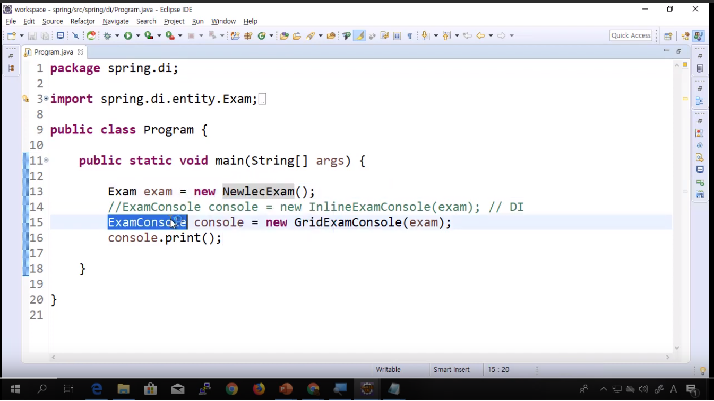
- NewlecExam 객체, ExamConsole 객체
- 두 객체가 결합되어 사용된다
- ExamConsole 이 NewlecExam 을 사용함
================================================================================
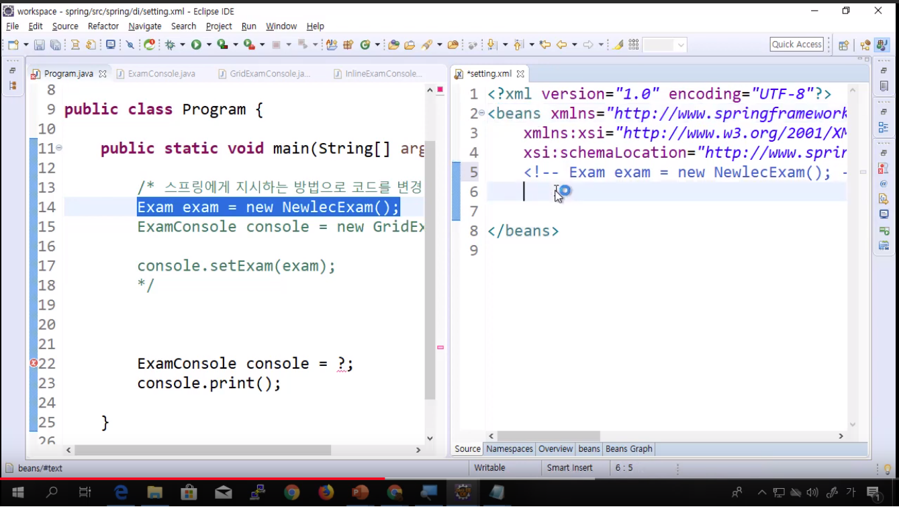
- 스프링은 bean 이라고 하는 태그를 이용해서 생성할 객체를 지시해달라고 말함
================================================================================
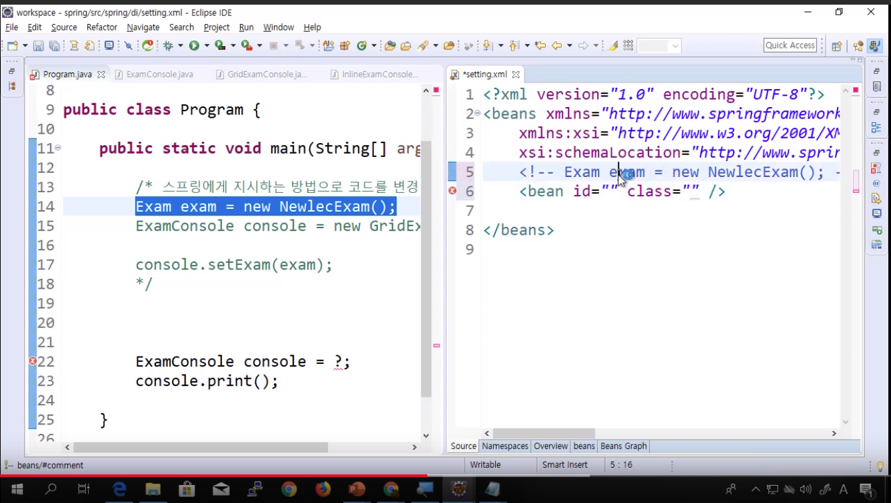
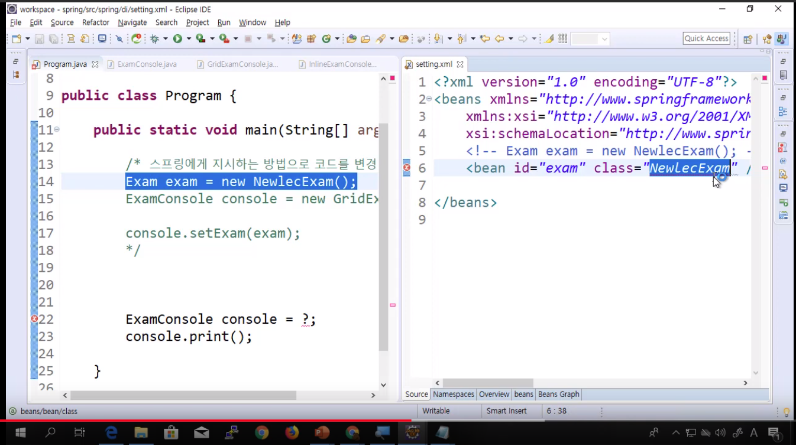
- 어떠한 클래스를 객체화할것인지,
- 그 클래스를 class 에 작성
- 그 객체를 어떤 이름 (변수명) 으로 쓸 건지, id 에 작성
================================================================================
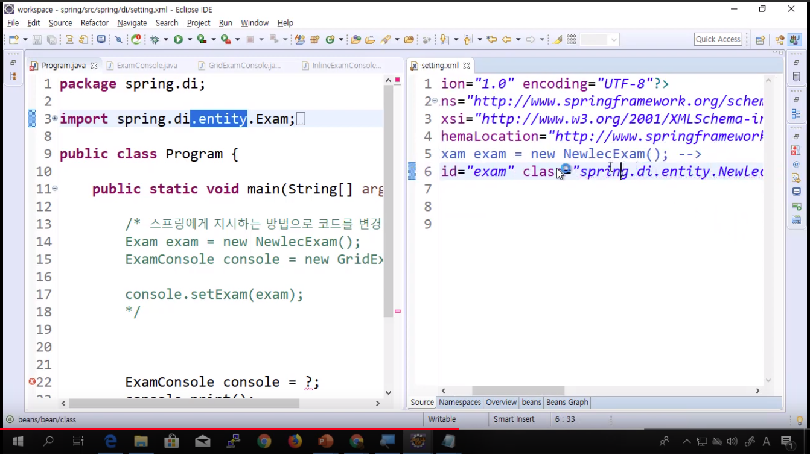
- 이름이 같은 클래스가 있을 수 있으니까
- 패키지명도 같이 써줘야함
- exam 이라는 이름으로 코드에서 꺼내 쓸 수 있음
================================================================================
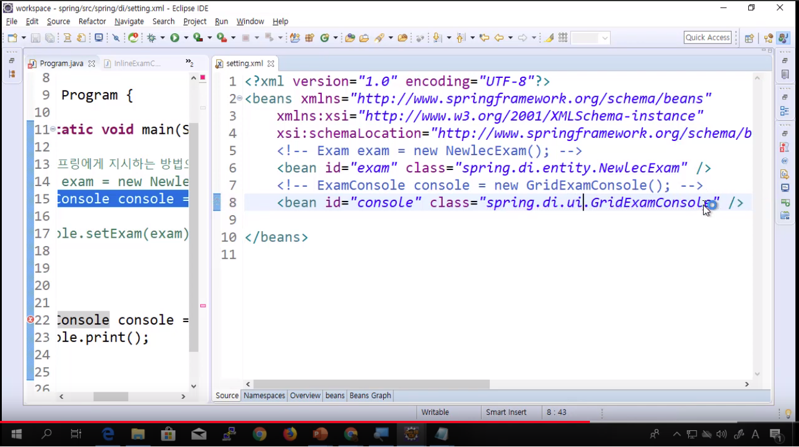
- GridExamConsole 을 적용
================================================================================
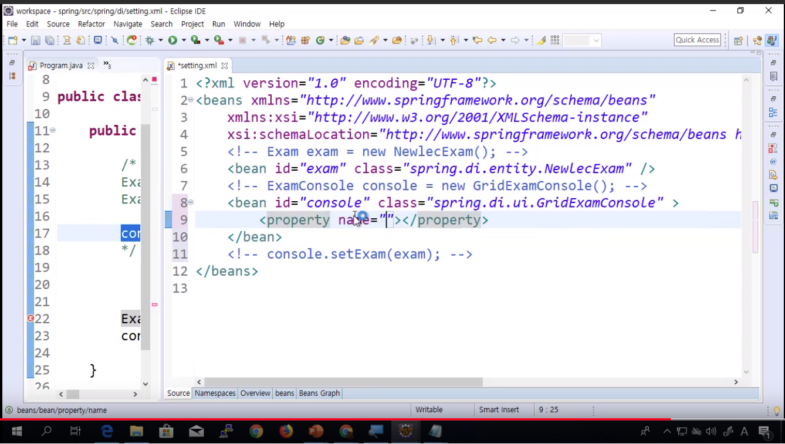
- 조립을 지시함
- setExam: exam 속성에 set
================================================================================
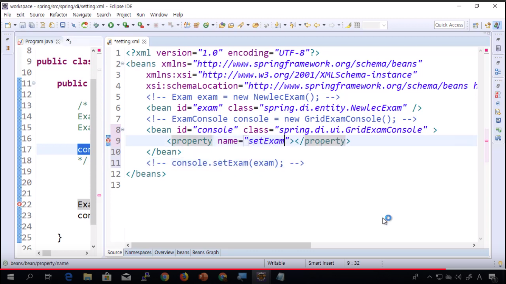
- setExam 함수명, property 명으로 setter 를 쓰는 것임
- 원래는 setExam 이라는 setter 를 쓰는건데
- property 명으로 대신해서,
- set 을 생략함
- 대문자를 소문자로 바꾼다
- 하지만 exam 은 setExam 을 호출하기위한 함수명이다
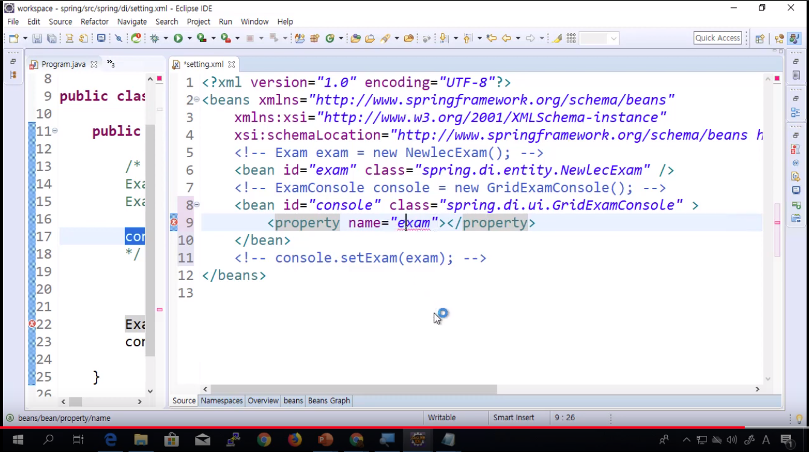
================================================================================
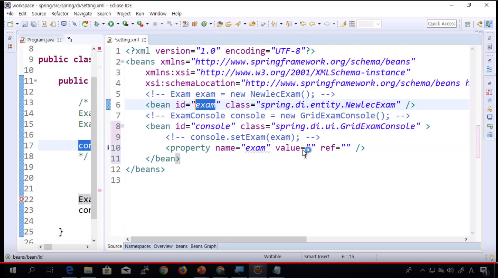
================================================================================
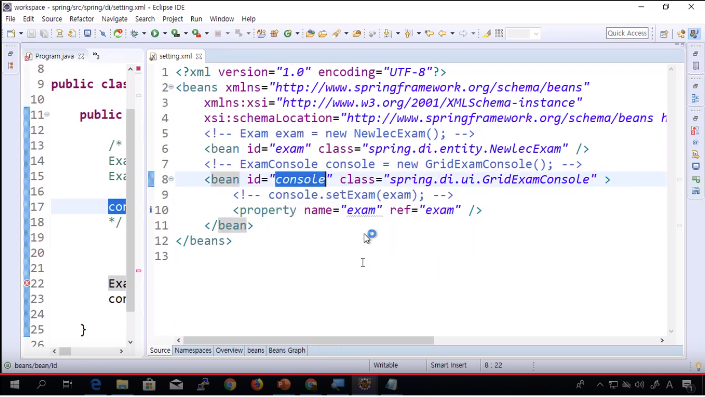